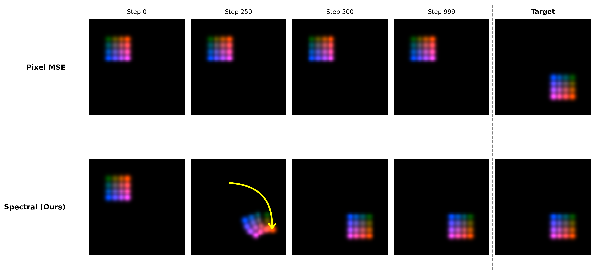

{kind=link}
{kind=link}

SpectralSplats (right) enables robust tracking even from zero-overlap initializations, whereas pixel-only optimization (left) fails to converge.
Abstract
3D Gaussian Splatting (3DGS) enables real-time, photorealistic novel view synthesis, making it a highly attractive representation for model-based video tracking. Standard photometric objectives implicitly rely on spatial overlap; if severe camera misalignment places the rendered object outside the target's footprint, gradients strictly vanish. We introduce SpectralSplats, a robust tracking framework that resolves this by shifting optimization to the frequency domain.
Method Overview
Why pixel loss fails

Standard photometric loss vanishes under large spatial displacement, while spectral supervision provides informative gradients and avoids the locality trap.
2D Demo

Pixel-space supervision remains stranded near initialization, while spectral supervision produces coherent motion toward the target even under zero spatial overlap.
Qualitative Results
Comparison of MLP+Pixel vs. MLP+Spectral supervision across spatial shifts (0.0 to 0.8).
Shiba
0.0
0.2
0.4
0.6
0.8
MLP+Pixel
MLP+Spectral
French
0.0
0.2
0.4
0.6
0.8
MLP+Pixel
MLP+Spectral
English
0.0
0.2
0.4
0.6
0.8
MLP+Pixel
MLP+Spectral
Hound
0.0
0.2
0.4
0.6
0.8
MLP+Pixel
MLP+Spectral
Citation
@inproceedings{spectralsplats2026,
title={SpectralSplats: Robust Differentiable Tracking via Spectral Moment Supervision},
author={Cohen Rimon, Avigail and Mann, Amir and Ben Chen, Mirela and Litany, Or},
year={2026}
}